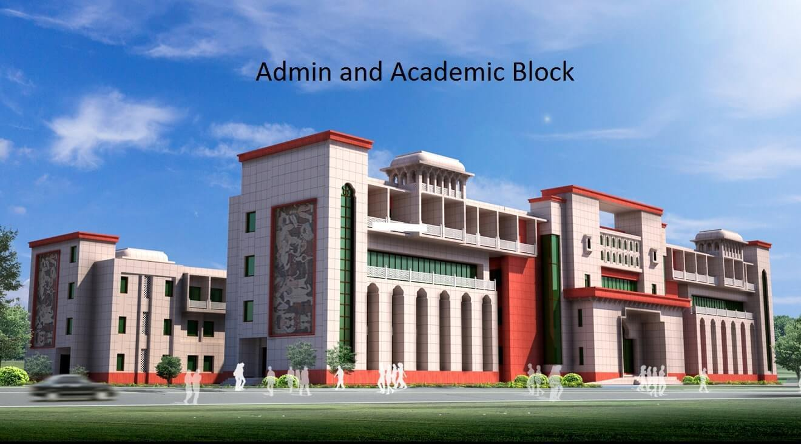

INDAIN INSTITUTE OF INFORMATION TECHNLOGY,KOTA
Indian Institute of Information Technology, Kota (IIIT, Kota) is an institute of national importance. IIIT Kota is a joint venture of the Ministry of Education (MoE) Govt. of India and Govt. of Rajasthan with Industry Partners in Public-Private-Partnership (PPP) model. IIIT Kota was established in 2013. Currently, the institute is mentored by Malaviya National Institute of Technology Jaipur (MNIT Jaipur) and is situated at MNIT Jaipur. The main site of IIIT, Kota shall be constructed at Ranpur near Kota on 100.37 acres of land made available by the Govt. of Rajasthan.
2nd Floor, Prabha Bhawan, MNIT Campus,, JLN Marg, Jaipur, Rajasthan 302017
 Vist IIIT kotaIndian Institute of Information Technology Kota (IIIT, Kota) is one of the Indian Institutes of Information Technology proposed to be located at Ranpur near Kota, Rajasthan. IIIT Kota is a joint venture of the Ministry of Human Resource Development, Government of India with Industries in Public-Private Partnership model. First batch of IIIT Kota has graduated in the year 2017. IIITK offers technical courses for CSE and ECE branches, with creative project courses. Every year IIITK celebrates its Foundation Day in April. After the IIIT Act was passed in the Parliament in 2017, IIITK has become an "Institute of National Importance", equalling in status with the NITs and IITs, with power of offering degrees officially.
Latest events
- Short TOURATHON Event
- Atal sponsored FDP on “Explainable AI .....” on Date December 20-24,2021
- IIIT Kota organized its first convocation
- First International conference on Intelligent Cyber Physical systems ICPS-2021
- Training Programme on IoT in Agriculture Domain
- AICTE Training and Learning Academy (ATAL) Programme
- TEQIP-III sponsored 5-day workshop on ‘Mental health and emotional wellbeing’ under the MANODARPAN umbrella was organized in online mode from September 14-18, 2020 for students and faculty members.
Placement
placement statistics 2020-2021
| BRANCH | MAXIMUM PACKAGE | AVERAGE PACKAGE | PLACEMENT% |
|---|---|---|---|
| CSE | 43 LPA | 10.6 LPA | 95.65% |
| ECE | 15.5 LPA | 7.4 LPA | 93.75% |
| Total | 43 LPA | 9 LPA | 94.87% |
placement statistics 2019-2020
| BRANCH | MAXIMUM PACKAGE | AVERAGE PACKAGE | PLACEMENT% |
|---|---|---|---|
| CSE | 29 LPA | 11.7 LPA | 95% |
| ECE | 29 LPA | 8.9 LPA | 86.11% |
| Total | 29 LPA | 10.4 LPA | 90.79 |